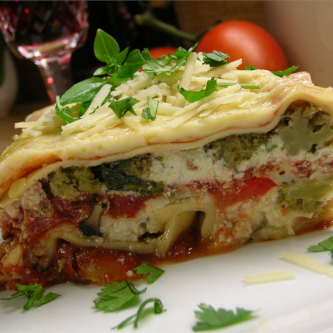

Hearty Vegetable Lasagna

A quick and healthy Lasagna
It's quick, it's healthy, and it's affordable.
You can remove or add most kinds of vegetables so long as you account
for size and cooking times.
1 (16 ounce) package lasagna noodles
1 pound fresh mushrooms, sliced
¾ cup chopped green bell pepper
2 tablespoons vegetable oil
2 (26 ounce) jars pasta sauce
1 (15 ounce) container part-skim ricotta cheese
4 cups shredded mozzarella cheese
½ cup grated Parmesan cheese
Steps
- Cook the lasagna noodles in a large pot of boiling water for 10 minutes,
or until al dente. Rinse with cold water, and drain.
- In a large saucepan, cook and stir mushrooms, green peppers, onion, and garlic in oil.
Stir in pasta sauce and basil; bring to a boil. Reduce heat, and simmer 15 minutes.
- Mix together ricotta, 2 cups mozzarella cheese, and eggs.
- Preheat oven to 350 degrees F (175 degrees C).
Spread 1 cup tomato sauce into the bottom of a greased 9x13 inch baking dish.
Layer 1/2 each, lasagna noodles, ricotta mix, sauce, and Parmesan cheese.
Repeat layering, and top with remaining 2 cups mozzarella cheese.
- Bake, uncovered, for 40 minutes. Let stand 15 minutes before serving.